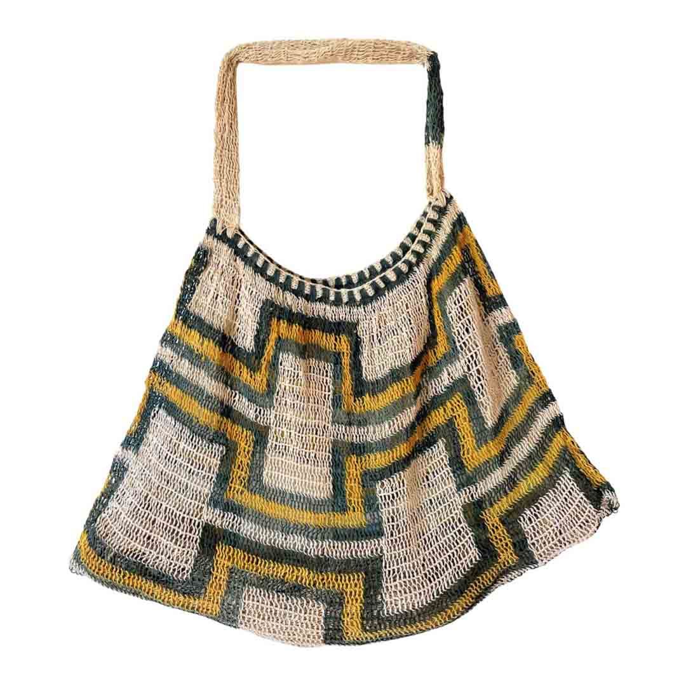

Handwoven in Umboldi Village, Madang
Umboldi Bilum 131214
K1,109.00
Tax included.
Enquire about this bilum ↗A work of functional art, this authentic bilum comes from Umboldi Village on the Rai Coast of Papua New Guinea. It is woven using time-honoured techniques passed down through generations.
Made from hand-foraged tulip tree fibre, its green and yellow pattern carries the traditions and identity of the women who weave it.
- Handcrafted by women artisans in PNG
- Hand-foraged natural fibres
- Traditional weaving techniques
- Supports living cultural skills
Description
Each bilum is individually handwoven, so small variations in colour and pattern are part of its character.
Shipping information
PNG-wide delivery is available. Contact us to confirm delivery timing and international shipping options.
Care
Keep dry when possible and store away from direct sunlight. Spot clean gently and allow the natural fibres to air dry.